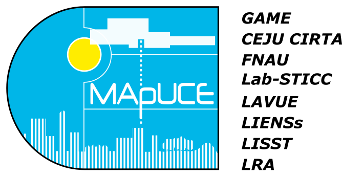

Les cartes et les données présentées dans ce visualiseur sont issues de travaux de recherche réalisés dans le cadre de l'ANR MApUCE.
Ce démonstrateur, développé par le groupe SIG de l'équipe DECIDE du Lab-STICC, est en cours de construction. De même, les résultats ici présentés sont en cours de calcul. Aussi les cartes sont mises à jour au fur et à mesure.
En savoir plus: Visitez la page de synthèse du programme de recherche MApUCE.

Ci-dessous sont définis les termes et indicateurs visibles sur cette plateforme et utilisés dans le cadre du projet MApUCE.
Termes
- USR : Unité Spatiale de Référence, définie par un ensemble de parcelles cadastrales qui se touchent et auxquelles sont adjointes les demi-surfaces de routes entourant cet ensemble,
- Bloc : ensemble de bâtiments ayant au moins un point de contact (ou une façade) en commun. Les bâtiments qui se touchent sont alors fusionnés afin de générer une nouvelle "super" géométrie : le bloc.
Indicateurs par îlots
- Surfaces
- Pourcentage de surface de bâtiments : Rapport entre la somme des surfaces au sol des bâtiments et la surface de l'USR,
- Pourcentage de surface de plancher : Rapport entre la somme des surfaces de plancher et la surface de l'USR. La surface de plancher d'un bâtiment est égale à la surface au sol multipliée par le nombre de niveaux du bâtiment,
- Pourcentage de surface de végétation : Rapport entre la somme des surfaces de végétation et la surface de l'USR,
- Pourcentage de surface de routes : Rapport entre la somme des surfaces de routes et la surface de l'USR,
- Pourcentage de surface en eau : Rapport entre la somme des surfaces en eau et la surface de l'USR,
- Formes
- Hauteur moyenne des bâtiments : Moyenne des hauteurs des bâtiments présents dans l'USR,
- Volume moyen des bâtiments : Moyenne des volumes des bâtiments présents dans l'USR,
- Compacité moyenne des bâtiments : Moyenne des compacité des bâtiments présents dans l'USR,
- Compacité moyenne des blocs : Moyenne des compacités des blocs présents dans l'USR,
- Autres
- Nombre de bâtiments : Nombre de bâtiments présents dans l'USR,
- Distance moyenne entre bâtiments : Pour chaque bâtiment, nous calculons la moyenne des distances aux autres bâtiments présents dans l'USR. Ensuite, nous calculons la moyenne de ces distances moyennes.
Typologies
- Bâtiment majoritaire par ilôts : dans chaque USR, les bâtiments sont statistiquement classés sur la base d'une soixantaine d'indicateurs morphologiques (en partie présentés ci-dessus). Cette classification (supervisée, avec la méthode du "Random Forest") permet de faire ressortir les types majoritaire et secondaire de bâti dans l'USR. Ici, nous présentons le type majoritaire.
Ci-dessous sont présentées les données d'USR produites dans le cadre du projet MApUCE et fournies en accès libre (licence ODbL).
Dans chacun des fichiers .zip listés ci-dessous, vous trouverez :
- un fichier "USR_MAPUCE_xxx.geojson", couvrant l'unité urbaine "xxx" choisie,
- un fichier "readme.pdf" décrivant le jeu de donnée,
- un fichier "usr_mapuce_agglo_villes.pdf" contenant la liste des unités urbaines et communes disponibles,
- un fichier de style "usr_typo.sld" permettant de cartographier le champ "typo_maj".
|
Unité Urbaine |
| A |
Ajaccio,
Albi,
Amiens,
Angers,
Avignon
|
| B |
Bayonne,
Belfort,
Besançon,
Bordeaux,
Boulogne-sur-Mer,
Brest
|
| C |
Caen,
Calais,
Chalons-en-Champagne,
Chateauroux,
Clermont-Ferrand
|
| D |
Dijon
|
| F |
Frejus
|
| G |
Grenoble
|
| L |
La Rochelle,
Le Havre,
Lorient,
Lyon
|
| M |
Montbeliard,
Montpellier,
Mulhouse
|
| N |
Nancy,
Nantes,
Nimes
|
| P |
Paris,
Pau
|
| Q |
Quimperlé
|
| R |
Reims
|
| S |
Saint-Brieuc,
Saint-Étienne,
Saint-Nazaire
|
| T |
Toulon,
Toulouse,
Tours
|
| V |
Valence,
Valenciennes,
Vannes
|
Ci-dessous sont listées deux publications scientifiques présentant la chaîne de traitement mise en oeuvre pour produire ces données.
- Bocher E., Petit G., Bernard J., Palominos S. "A geoprocessing framework to compute urban indicators: The MApUCE tools chain". Urban Climate, Elsevier, 2018, 24, pp.153-174. 10.1016/j.uclim.2018.01.008
- Bocher E., Petit G., Fortin N., Palominos S. "H2GIS a spatial database to feed urban climate issues". 9th International Conference on Urban Climate (ICUC9), Jul 2015, Toulouse, France. 2015. (Référence)
Résultats
Les cartes ici présentées sont le fruit de calculs scientifiques. II n'est reconnu aucune valeur juridique particulière au contenu des données mises à disposition. Les auteurs déclinent toute responsabilité concernant l'interprétation qui pourrait en être faite.
Outils
L'ensemble des outils utilisés pour stocker, traiter et diffuser les données de ce projet est basé sur des licences ouvertes (open-source). Ainsi :
- le visualiseur de cartes est basé sur le projet "MViewer" de la plateforme régionale GéoBretagne. Ce projet distribué sous la licence open source, GNU GPL 3 et disponible à l'adresse https://github.com/geobretagne/mviewer.
- les indicateurs géographiques ont été produits à l'aide de la base de données spatiale H2GIS, à travers le logiciel SIG OrbisGIS. Deux logiciels Open-Source développés par le groupe SIG de l'équipe DECIDE.
Auteurs & Contact
Le présent site internet a été mis en oeuvre par Erwan Bocher et Gwendall Petit, membres du groupe SIG de l'équipe DECIDE du Lab-STICC (CNRS UMR 6285).
Pour toutes questions ou demandes d'informations complémentaires, veuillez envoyer un e-mail à "info" arobase "orbisgis.org"